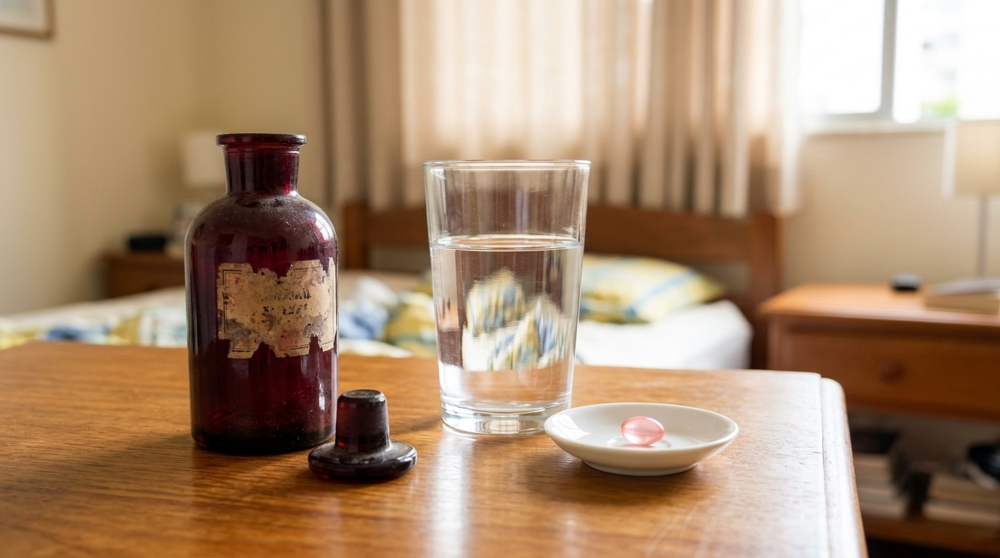

Quando Carlos olhou para o rosto da esposa, Helena (54 anos), sob a luz clara da manhã, ele teve quase certeza de uma coisa:
"Ela fez algum procedimento estético em clínica e não me contou."
Afinal, o aspecto cansado ao redor dos olhos e da boca tinha dado lugar a um viço firme e iluminado — até mesmo no pescoço e no colo, que ela antes costumava esconder com blusas fechadas.
Curioso, naquela mesma noite ele reparou na cabeceira da cama dela.
Lá estavam um frasco de vidro escuro e um copo d'água cheio.
Achando que tinha descoberto mais um daqueles séruns franceses de R$ 400, Carlos pegou o vidrinho escuro na mão.
Mas levou um susto: o vidro estava velho, ressecado e completamente vazio.
Helena entrou no quarto, deu risada da cara do marido e revelou o que realmente tinha acontecido:
"Eu parei de passar cremes caros no rosto há dois meses. Deixei esse vidro velho e vazio aí no criado-mudo só para me lembrar de nunca mais jogar dinheiro no ralo. O que mudou a minha pele não se passa por fora — é uma cápsula japonesa que eu acabei de tomar com esse copo d'água antes de dormir!"
O que Helena descobriu por acaso em uma reportagem científica explica a maior frustração silenciosa das mulheres cuidadosas acima dos 40 anos: não era falta de cuidado. Os cremes apenas tentavam agir do lado errado da pele.

"Sua pele não foi criada pela natureza para ser uma esponja que absorve cremes. Ela foi criada para ser um escudo impenetrável que barra quase tudo do lado de fora."
O Segredo da "Bola de Basquete na Peneira" (A Regra dos 500 Daltons)
Na dermatologia mundial, existe uma lei física comprovada na Universidade de Amsterdam chamada Regra dos 500 Daltons.
É muito simples de imaginar: os poros da superfície da nossa pele funcionam como uma peneira finíssima.
Para proteger o corpo, essa barreira só deixa entrar partículas minúsculas, de no máximo 500 Daltons.
E aqui está o motivo pelo qual aquele vidro no criado-mudo ficou vazio para sempre:
A molécula de colágeno dentro dos cremes faciais — mesmo nos mais caros do mundo — mede cerca de 300.000 Daltons.
Ou seja: passar creme esperando firmar a camada profunda da pele é como tentar passar uma bola de basquete pelos furinhos de uma peneira fina. Ela fica parada por fora e vai embora na água do banho de manhã.

Por que os cremes ficam retidos na superfície?
Veja a diferença brutal entre o tamanho do poro e o tamanho da molécula dos cosméticos comuns:
Daltons
Tamanho máximo que passa pelo poro da pele
Daltons
Tamanho da molécula nos cremes faciais
A Descoberta Japonesa do "Carro-Forte" (Por Que Apenas um Copo D'Água Antes de Dormir Muda Tudo)
Muitas mulheres até tentaram tomar colágeno em pó comum pela manhã, mas desistiram porque não viam diferença no espelho.
O motivo é simples: o ácido do estômago destrói mais de 90% dos pós comuns antes que eles cheguem perto da pele.
Para resolver isso, pesquisadores japoneses desenvolveram o Efeito "Carro-Forte" de Proteção Celular.

Tomada com um simples copo d'água cerca de 2 horas antes de dormir, essa cápsula blindada passa ilesa pelo estômago e libera 4 bioativos reconstrutores exatamente no pico noturno de regeneração celular.
Assim, os nutrientes chegam pela corrente sanguínea direto à camada profunda do rosto, pescoço e colo — onde nenhum creme jamais conseguiu chegar.
O que você vai descobrir na Apresentação Oficial do Rosa Oriental:
- Os 4 Bioativos do "Efeito Esponja e Sustentação": Quais são os 4 nutrientes exatos dentro da cápsula rosa que retêm até 1.000x seu peso em água e devolvem o "colchão" de firmeza da pele madura.
- O Ritual Noturno de 10 Segundos: Por que tomar 1 cápsula no criado-mudo antes de dormir aproveita o horário biológico em que sua pele se reconstrói 3x mais rápido.
- Economia Inteligente: Como substituir potes de cremes de R$ 300+ por um cuidado interno que custa menos que um café expresso por dia.
- Lote Promocional com Frascos Grátis + Desafio 90 Dias: Como testar o protocolo em casa por 3 meses completos com Risco Zero (se você não amar o que vê no espelho, recebe 100% do valor de volta).
Qual é a sua faixa de idade atual?
Toque na sua faixa etária abaixo para abrir a apresentação oficial do Rosa Oriental e ver o protocolo noturno ideal para a sua pele:
Rosa Oriental: O Verdadeiro Segredo do Criado-Mudo
Veja na página seguinte os 4 bioativos completos da fórmula, depoimentos reais de clientes e os pacotes oficiais com até 2 frascos extras grátis + Frete Grátis.


Blindado pelo Desafio de 90 Dias (Risco Zero)
Você recebe o Rosa Oriental em casa com Frete Grátis e faz o teste real. Se em 90 dias você não ficar encantada com a firmeza, hidratação e viço da sua pele no espelho, devolvemos 100% do seu investimento.
👉 CONHECER O ROSA ORIENTAL E VER COMO FUNCIONA → 🔒 Toque no botão verde acima para acessar a Apresentação Oficial Completa
Nota Importante à Leitora: Para evitar imitações com pós comuns sem blindagem gástrica, o verdadeiro Rosa Oriental não é vendido em farmácias nem em sites como Mercado Livre ou Shopee. A distribuição oficial com Garantia de 90 Dias é feita exclusivamente através dos botões desta reportagem.
Nota Final para as Leitoras: Se você também tem frascos de cremes caros no criado-mudo ou no banheiro que nunca entregaram o que prometeram, descubra o que acontece quando você nutre sua pele de dentro para fora enquanto dorme com o Rosa Oriental. Com o Desafio de 90 Dias + Frete Grátis, o teste na sua rotina tem Risco Zero.
👉 VER APRESENTAÇÃO OFICIAL DO ROSA ORIENTAL → 🔒 Acesso direto à página oficial do fabricante · Garantia de 90 Dias + Frete Grátis
Gente, essa explicação da bola de basquete na peneira abriu minha mente! Eu já tinha gastado uma fortuna em cremes que prometiam mundos e fundos e só deixavam o rosto oleoso. Estou no final do segundo pote do Rosa Oriental (peguei o kit de 5 meses) e até minha irmã perguntou o que eu fiz no rosto de tão firme e iluminada que minha pele está!
Eu sempre tive receio de comprar pela internet, mas chegou direitinho pelos Correios aqui no interior de SP em 5 dias úteis. Tomo todo dia 2 horinhas antes de dormir. As linhas perto da boca e no colo deram uma suavizada linda, já não fico mais escondendo o pescoço com lenço.
Aconteceu exatamente isso comigo com o colágeno em pó! Tomava aquele pó ruim todo dia de manhã e não via diferença nenhuma. Agora entendi que o estômago destruía tudo antes de chegar na pele. Acabei de garantir meu kit de 3 + 2 grátis pelo link oficial aqui da matéria, obrigada!
Meninas, vale muito a pena pegar o kit com os potes extras grátis. Eu dividi o primeiro mês com minha filha de 36 anos e nós duas amamos, a pele acorda descansada e super macia, parece que segura a hidratação o dia inteiro.